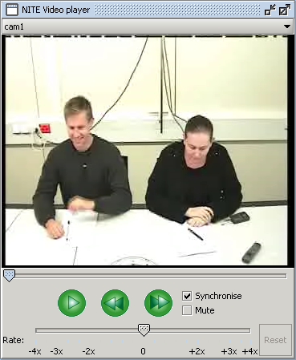
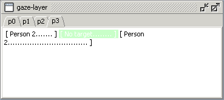

With the video player (see Figure 1) you can play any media signal that is available for the loaded observation. At the top of the player there is a combo box that lists the available signals (both video and audio). The signals in the M4 corpora are listed in Table 1.

Figure 1: Video player
| Lapel-mix | only audio |
| cam1 | video from the camera facing agents p3 and p1 |
| cam2 | video from the camera facing agents p0 and p2 |
| cam3 | video from the camera facing the white board |
| video-mix | video mix of all three cameras |
Table 1: Media signals
At startup, the Continuous Video Labeling Tool loads signal cam1. When you select another signal, it is loaded into the video player and the video is paused and reset to the start of the signal.
Under the video is the playback line with a marker that shows the current time position in the video. You can drag the marker to change the position. Under the playback line are the control buttons and two check boxes. With the control buttons you can play and pause the video and you can move the video position five seconds forward or backward.
The two check boxes are named Synchronise and Mute. When the Mute box is checked, the audio is not played back.
The Synchronise box is checked at startup and should never be unchecked, because otherwise the program cannot determine the current video time. The annotation and view windows are synchronised with the video, so while you are playing a video, the windows highlight the annotation at the current video time. Figure 2 shows that the video is at the position of the second gaze annotation of agent p3.

Figure 2: Annotations are synchronised with the video
You can also select one or more annotations and play the video fragment that covers the selected annotations. You can select annotations in an annotation window or view window. Just click an annotation or drag over the annotations that you want to select. Then hold the CTRL key and click the right mouse button to play back the video fragment.
At the bottom of the video player you see the rate slider. It is used to slow down or fasten up the playback. The slider ranges from -4x to +4x and has an exponential scale. When the slider is positioned at -4x, the video will be played back 4 times as slow as normal. At +4x the video will be played back 4 times as fast. At position 0 the play rate is normal.
Just drag the marker to change the play rate, but note that the rate is only changed when the player is paused. If the video player is playing, you can still drag the marker and the play rate will change as soon as you pause the player.
When the rate slider is not at position 0, the Reset button is enabled. Click it to reset the slider to position 0.